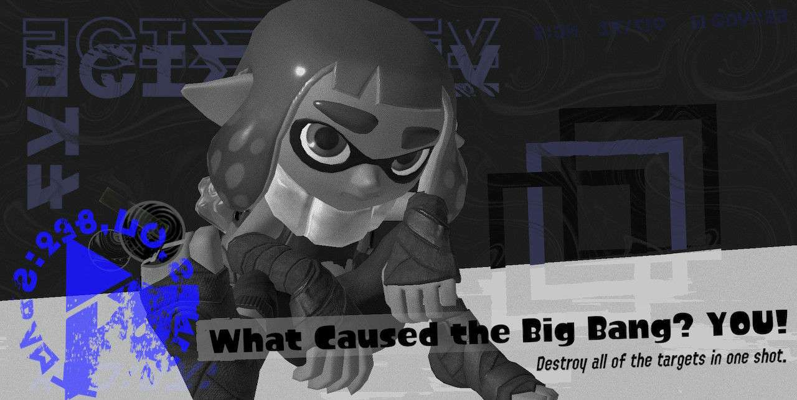

Speaking of this creature, he is also apart of the story! Well, somewhat.
Splatoon takes place in the future, the way future. Humanity is gone, the water flooded the Earth which meant that the entirety of the human species were gone.
The only animals that survived were sea animals, of course. But WHY and WHAT is this creature I'm talking about? This creature is a feline. His name is Judd.
He is the only surviving mammal left. But how? Why? A scientist put Judd into a capsule, allowing the feline to survive. The scientist already knew his impending doom was nea,
so he decided to put his furry friend into a capsule to live his life. The capsule kept him cryogenically sealed for ten thousand years, and was supposedly injected with a immortality drug by his owner.
There are scrolls in the game that you can collect in the single-player mode, which tells you more about the game. And Judd's story is no exception.
In the 27th scroll, it says this: "Oh, my beloved Judd... it seems the day has finally come. This capsule is designed to remain cryogenically sealed for 10,000
years. Good-bye, my purrfect little kitty cat. May your meows echo through the ages." In the EU version, it says the same thing, but the end is replaced with this,"...May the future be kind to you..."
Judd is said to be the only mammal in the game. He judges the battles the inklings have (turf battles, ranked battles). But this changed in the second installment, as soon enough there would be a mini clone of Judd.
The clones name would be Lil' Judd.
But what IS this single-player mode I talked oh so breifly about?
Every installment of the games have a single-player mode, but everyone likes to call it "story-mode", as it tells the story and lore of the game.
I personally did not play the first installment (unfortunately), but it tells the main story of why the Octatians (Octopi)
do not live on the surface with the Inklings (Squids). It was said that DJ Octavio (the leader of the Octarians) and Cap'n Cuttlefish (the leader of the SquidBeak Splatoon) fought in the Great Turf War.
What is the Great Turf War you may ask? It is essentially like our Cold Wars, except Splatoon's version (and one only happened, to my knowledge). The Octarians and Inklings fought for who who would live on the surface.
Whoever won, well, got to live on the surface, and whoever lost was sent to live underground. Ultimately, the Inklings won and they got to live on the surface. Meanwhile, the Octarians were sent to live in the underground. Almost banished in a way.
In story mode, Agent 3 (1st Splatoon) and Agent 4 (Splatoon 2) would go to the underground to fight the Octarians as their leader DJ Octavio stole the main power source of the surface, the Great Zapfish.
In the end ofboth, you get it back. Again, I won't go into depth about both endings (even the DLC and Splatoon 3's story) as those would be spoilers.
The DLC for Splatoon 2 if very different and goes WAY in depth into the Octoling's history. I would talk about it again, but I feel that this story is VERY important. I would genuinely reccommend playing it.
Splatoon 3's story is interesting however. You begin on the surface of course, and you start the beginning as usual. You even encounter DJ Octavio and start to fight him. HOWEVER, where you're in is a crater. The crater has an opening in the middle that can well, open. And it does just that once you defeat Octavio.
You get sucked in along with your small companian, Small Fry/Lil Buddy, Cap'n Cuttlefish, and DJ Octavio. You lose both of them, but find yourself in an underground world FILLED with snow. You meet up with the Squid Sisters, Callie & Marie, and Captain 3. Who was Agent 3 in Splatoon 1! They became the new Captain as Cap'n Cuttlefish decided to retire.
But something about this place seems odd... there are human like structures, statues, and other human like/made things? Interesting.
Turns out, this was a BUNKER a few humans and scientists have made before the tides rolled in. The humans TRIED to stay alive by building this bunker. But of course, the humans are extinct now.
But theres also this weird substance that is fuzzy. What could this all be? What could this all mean?
I fully reccommend playing this game or at least seeing gameplays of it, as the stories are interesting and sometimes dark.
